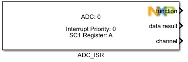
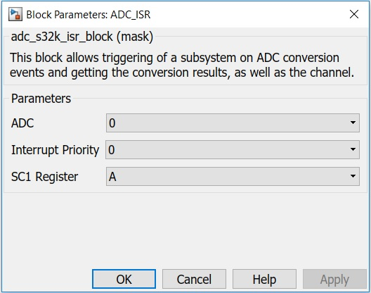

ADC ISR Block
This block allows triggering of a subsystem on ADC conversion events and getting the conversion results, as well as the channel.
Block Image
Inputs:
- None
Outputs:
- Function-call
- data result (uint32)
- channel (uint8)
Parameters and Dialog Box
The block dialog consists of the following tabs:
ADC
Selects the ADC converter number.
Interrupt Priority (0 to 15)
Global ISR Priority.
SC1 Register
Selects which SC1 Register is the source for the trigger.
Block Dependency
Please do the following:
- Configure the ADC Config block.
Block Miscellaneous Details:
- None
* To get more information refer to Hardware Manual documentation.